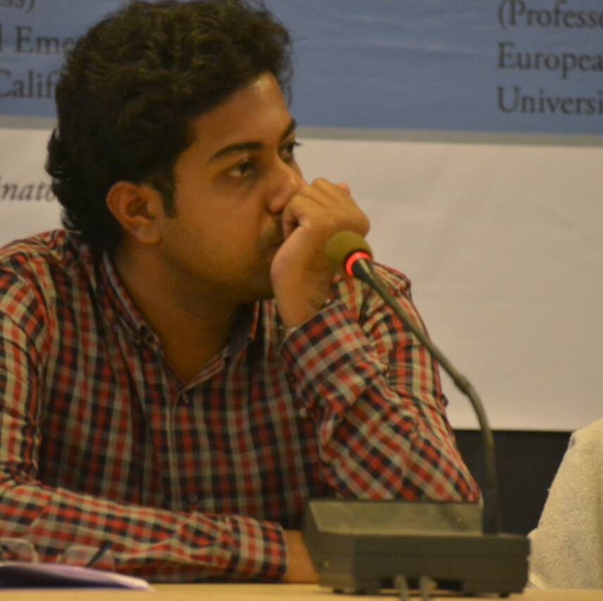

Professor Samir Gandesha
Director of the Institute of Humanities
Simon Fraser University, Canada
Samir Gandesha is an Associate Professor in the Department of the Humanities and the
Director of the Institute for the Humanities at Simon Fraser University. He specializes in
modern European thought and culture, with a particular emphasis on the 19th and 20th
centuries. His work has appeared in Political Theory, New German Critique, Constellations
Logos, Kant Studien, Philosophy and Social Criticism, Topia, the European Legacy,
the European Journal of Social Theory, Art Papers, the Cambridge Companion to
Adorno and Herbert Marcuse: A Critical Reader as well as in several other edited books. He
is co-editor with Lars Rensmann of Arendt and Adorno: Political and Philosophical
Investigations (Stanford, 2012). He is co-editor (with Johan Hartle) of Spell of Capital:
Reification and Spectacle(University of Amsterdam Press, 2017) and Aesthetic
Marx(Bloomsbury Press, 2017) also with Johan Hartle. He has also contributed to
openDemocracy, Canadian Dimension, the Vancouver Sun and the Globe and Mail. In the
Spring of 2017, he was the Liu Boming Visiting Scholar in Philosophy at the University of
Nanjing and Visiting Lecturer at Suzhou University of Science and Technology in China.
Dr Sourit Bhattacharya
Assistant Professor
Indian Institute of Technology, Roorkie
Uttarakhand, India
Sourit Bhattacharya is Assistant Professor in the Department of Humanities and Social Sciences at IIT Roorkee, India. His research interests include postcolonial and world literatures in English (from eco-critical perspectives), cultural studies of catastrophe, literature and hunger, minority studies, and materialistic aesthetic. His works are either published or forthcoming in such journals as Irish University Review, Ariel, Textual Practice, Interventions, and in edited books (The Aesthetics and Politics of Global Hunger, Palgrave, 2018). Along with Dr. Arka Chattopadhyay, Sourit co-edits Sanglap: Journal of Literary and Cultural Inquiry.

Dr Arka Chattopadhay
Assistant Professor
Indian Institute of Technology, Gandhinagar
Gujrat, India
Arka Chattopadhyay is assistant professor of literary studies in the department of
Humanities and Social Sciences at IIT Gandhinagar, India. He is a B.A., M.A., MPhil in
English Literature, from Presidency College and Jadavpur University, India. He has written
his MPHIL thesis on Samuel Beckett and Alain Badiou and finished his PHD from Western
Sydney University on Beckett and Lacanian Psychoanalysis with funding from IPRS and
APA, with the Dean’s Thesis Prize. Arka has been published in books like Deleuze and
Beckett and journals like Miranda, Textual Practice, S, Samuel Beckett
Today/Aujourd’hui and Psychoanalysis, Culture and Society, PsychoanalysisLacan, Colloquy
etc. He has co-editedSamuel Beckett and the Encounter of Philosophy and Literature and a
Bengali critical compendium on the works of Nabarun Bhattacharya. Arka is the chief editor
of the online literary journal Sanglap (http://sanglap-journal.in/). He has guest-edited the
SBT/A issue on Samuel Beckett and the Extensions of the Mind. His first
monograph, Beckett, Lacan and the Mathematical Writing of the Real is slated to come out in
December 2018 from Bloomsbury, U.S. He is commissioned to produce a translation of
Arindam Chakrabarti's book Mananer Madhu, in the series, Elsewhere Texts, edited by
Gayatri Chakraborty Spivak and others for Seagull. He has a forthcoming article
in Interventions (Taylor and Francis), and SBT/A (Brill) among other upcoming journal
publications and book chapters.
Dr Saswat.S.Das
Associate Professor
Department of Humanities and Social Sciences
Indian Institute of Technology, Kharagpur
West Bengal, India
Coordinator of the workshop